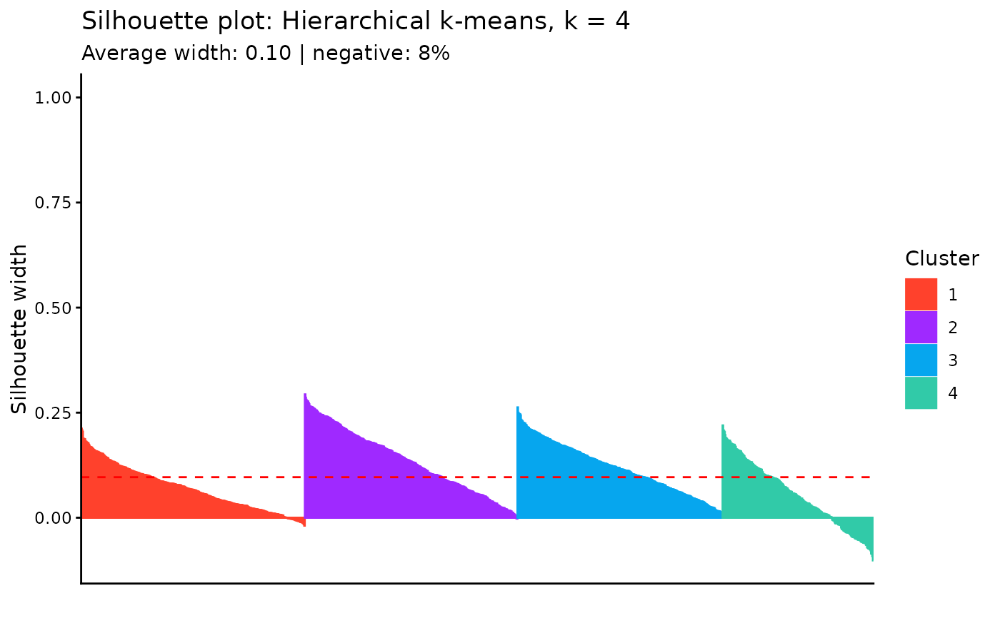
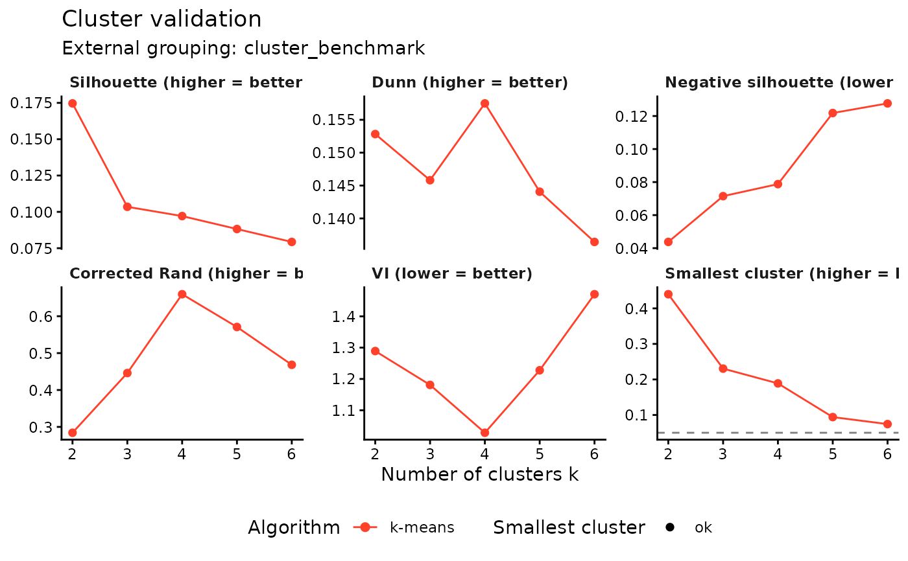
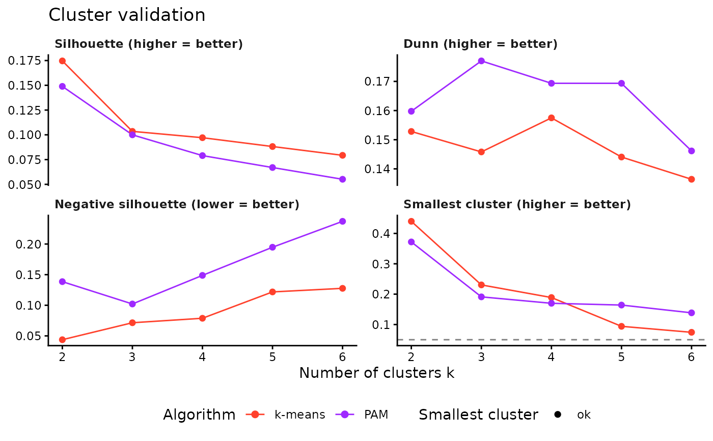

Assesses the quality of one or several cluster solutions with internal
validation measures (silhouette width, Dunn index) and, if a reference
grouping is supplied, external validation measures (corrected Rand index,
Meila's variation of information), following the approach described by
datanovia.
Every solution gets a silhouette plot (factoextra::fviz_silhouette()),
and all measures are visualized with ggplot2, which makes it easy to
compare several numbers of clusters and/or algorithms.
Usage
seg_validation(
object,
external = NULL,
external_name = NULL,
min_cluster_share = 0.05,
silhouette_plots = TRUE,
verbose = TRUE
)Arguments
- object
A cluster solution from
seg_cluster()or one of its family functions (classseg_cluster), several solutions (classseg_cluster_set, e.g. fromk = 2:6), or a list of such objects, e.g.list(hkmeans = cl_hk, pam = cl_pam). The names of the list are used as the names of the algorithms in the output and plots (by default, the name of the clustering method).- external
Optional reference grouping for the external measures:
a vector with one value per respondent of the prepared data,
a single string naming a column of the original data (
object$data_full, e.g."cluster_benchmark"), ora cluster solution (class
seg_cluster), e.g. an existing segmentation converted withseg_as_cluster().
Defaults to
NULL(no external validation).- external_name
Name of the reference grouping used in the output. Defaults to the column name (if
externalis a string), the title of the solution (ifexternalis a cluster solution), or"external".Solutions whose smallest cluster contains a lower share of respondents are flagged. Defaults to 0.05 (5%).
- silhouette_plots
Logical. Whether to create the silhouette plots (slow for many solutions with many respondents). Defaults to
TRUE.- verbose
Logical. Whether to print the results. Defaults to
TRUE.
Value
An object of class seg_validation, a list with the elements:
summary: tibble with one row per solution: the algorithm (method), the number of clusters (k), the solution, the number of respondents validated, the main measures and the share of the smallest cluster.measures: the same measures in long format, as used for the plots.optimal: tibble with the best solution per measure, with and without the solutions belowmin_cluster_share(only with several solutions).statistics: tibble with further internal statistics offpc::cluster.stats()per solution (see "Details").cluster_silhouette: tibble with the size, average silhouette width and share of negative silhouette widths per solution and cluster.silhouette: named list with one tibble per solution, with the respondent identifier, the cluster, the nearest other cluster (neighbor) and the silhouette width of each respondent. Respondents with a negative silhouette width are probably misclassified.crosstabs: named list with the cross tabulation of each solution with the reference grouping (NULLwithoutexternal).plot: all measures in one faceted plot.plots: list with the elementsmeasures(one plot per measure) andsilhouette(one silhouette plot per solution).plot_silhouette: the silhouette plots of all solutions combined.settings: list of the settings used.
Details
Clustering algorithms always return clusters, even for data without any cluster structure. Cluster validation checks whether the clusters found are compact and well separated (internal validation), and whether they agree with a known grouping (external validation). Comparing the measures across numbers of clusters and algorithms (relative validation) helps to choose the final solution.
Internal measures
Internal measures use only the clustering variables (via the distance matrix) and the cluster assignment. They assess compactness (respondents in the same cluster are similar) and separation (respondents in different clusters are dissimilar).
Silhouette width (range -1 to 1, higher is better). For each respondent \(i\), \(a_i\) is the average distance to the other members of its own cluster and \(b_i\) the average distance to the members of the nearest other cluster (the neighbor). The silhouette width is \(s_i = (b_i - a_i) / \max(a_i, b_i)\). Values close to 1 indicate well clustered respondents, values around 0 respondents between two clusters, and negative values respondents that are closer to another cluster than to their own, i.e. probably in the wrong cluster. The silhouette coefficient (
Silhouette) is the average over all respondents; the averages per cluster are returned in$cluster_silhouette, and the values of each respondent in$silhouette. A common rule of thumb (Kaufman & Rousseeuw, 1990) for the silhouette coefficient is:Silhouette coefficient Interpretation > 0.70 strong structure 0.51 to 0.70 reasonable structure 0.26 to 0.50 weak structure, could be artificial <= 0.25 no substantial structure For attitudinal survey data with many correlated rating scales, values of 0.1 to 0.25 are common; a segmentation can still be useful (e.g. as a meaningful partition of a continuum), but the segments should then not be presented as clearly distinct groups.
Negative silhouette (range 0 to 1, lower is better). The share of respondents with a negative silhouette width. A few negative values at the borders between similar clusters are normal; a large share indicates that the solution does not fit the data well (or that a cluster should be split or merged).
Dunn index (range 0 to Inf, higher is better). The smallest distance between two respondents in different clusters (minimum separation), divided by the largest distance between two respondents in the same cluster (maximum diameter). It relates the worst-case separation to the worst-case compactness. As it relies on a single minimum and a single maximum, it is very sensitive to outliers; for survey data, values are typically close to 0 and best used to compare solutions on the same data rather than on their own.
Further internal statistics of fpc::cluster.stats() are returned in
$statistics: the average distance within and between clusters and their
ratio (wb_ratio, lower is better), the within-cluster sum of squares,
the Calinski-Harabasz index (ch, higher is better), a more robust
variant of the Dunn index based on average distances (dunn2, higher is
better), the Pearson correlation between the distances and the
"same cluster" indicator (pearson_gamma, higher is better) and the
entropy of the cluster sizes (entropy, higher = more balanced).
External measures
If a reference grouping is supplied with external (e.g. a known
segmentation from a previous wave, a benchmark solution or a
sociodemographic grouping), the agreement of each solution with it is
measured. The number of groups does not need to be the same.
Corrected Rand index (Hubert & Arabie, 1985; also adjusted Rand index, range -1 to 1, higher is better). Considers all pairs of respondents and counts how often both groupings agree (both in the same group or both in different groups), corrected for the agreement expected by chance. 1 means identical groupings, 0 an agreement at chance level.
Meila's variation of information (VI, Meila, 2007; range 0 to Inf, lower is better). An information-theoretic distance between the two groupings: the information lost and gained when switching from one grouping to the other. 0 means identical groupings.
The cross tabulations of each solution with the reference grouping are
returned in $crosstabs; they show which clusters correspond to which
reference groups. Respondents with a missing value in the reference
grouping are excluded from the external measures.
External validation is mainly used to check whether a new segmentation reproduces an existing one, or to compare algorithms on data with known groups. Note that a solution may legitimately differ from a reference grouping, e.g. if the clustering variables have changed.
Cluster sizes
The validation measures do not take the cluster sizes into account. The
share of the smallest cluster is therefore reported for each solution and
shown in the plots; solutions below min_cluster_share are flagged.
Comparing several solutions
With several solutions (e.g. seg_cluster(prep, "kmeans", k = 2:6), or a
list of solutions of different algorithms), all measures are shown as
lines over the number of clusters, one line per algorithm ($plot), and
the best solution per measure is reported in $optimal. As with
seg_compare_algorithms(), no single measure is decisive: prefer
solutions that perform well on several measures, have no too small
clusters and can be interpreted. The silhouette coefficient tends to favor
few clusters.
All measures of a solution are computed on the distance matrix of the
prepared data (object$dist), or, if it is not available (e.g. after
seg_prep_data() with compute_distance = FALSE), on a distance matrix
computed with the distance measure of the prepared data. This is also the
case for methods that optimize Euclidean distances (k-means), so that all
solutions on the same prepared data are evaluated on the same distances.
Only compare solutions based on the same prepared data.
Noise
Respondents classified as noise by density-based methods (cluster 0) are
excluded from the internal measures and the silhouette plot. For the
external measures, noise is treated as a group of its own. Solutions with
fewer than two clusters (excluding noise) cannot be validated internally;
their internal measures are NA.
References
Dunn, J. C. (1974). Well-separated clusters and optimal fuzzy partitions. Journal of Cybernetics, 4(1), 95-104. doi:10.1080/01969727408546059
Hubert, L. and Arabie, P. (1985). Comparing partitions. Journal of Classification, 2, 193-218. doi:10.1007/BF01908075
Kaufman, L. and Rousseeuw, P. J. (1990). Finding Groups in Data: An Introduction to Cluster Analysis. Wiley.
Meila, M. (2007). Comparing clusterings - an information based distance. Journal of Multivariate Analysis, 98(5), 873-895. doi:10.1016/j.jmva.2006.11.013
Rousseeuw, P. J. (1987). Silhouettes: A graphical aid to the interpretation and validation of cluster analysis. Journal of Computational and Applied Mathematics, 20, 53-65. doi:10.1016/0377-0427(87)90125-7
See also
Other validation:
seg_plot_silhouette()
Examples
# \donttest{
prep <- seg_prep_data(
sm_synthetic,
vars = dplyr::starts_with("F50_0_"),
id = "id",
missing = "mice",
max_missing_prop = 0.2,
verbose = FALSE
)
# Single solution
cl <- seg_cluster(prep, k = 4, plots = FALSE, verbose = FALSE)
val <- seg_validation(cl)
#>
#> ── Cluster validation ──
#>
#> 1 solution | distance: "euclidean"
#> • Hierarchical k-means, k = 4: silhouette = 0.10, Dunn = 0.157, negative
#> silhouette = 8%, smallest cluster = 19%
#> ℹ Highest silhouette coefficient 0.10: no substantial cluster structure (Kaufman & Rousseeuw).
#> Plots: `$plot (measures)`, `$plot_silhouette`, and `$plots`
val$plots$silhouette[[1]]

val$cluster_silhouette
#> # A tibble: 4 × 5
#> solution cluster n avg_width negative_share
#> <chr> <int> <int> <dbl> <dbl>
#> 1 Hierarchical k-means, k = 4 1 387 0.0698 0.0801
#> 2 Hierarchical k-means, k = 4 2 368 0.134 0.00543
#> 3 Hierarchical k-means, k = 4 3 355 0.118 0
#> 4 Hierarchical k-means, k = 4 4 261 0.0529 0.276
# Several numbers of clusters, with the benchmark segmentation as
# reference grouping
cl_km <- seg_cluster(prep, "kmeans", k = 2:6, plots = FALSE, verbose = FALSE)
val_km <- seg_validation(cl_km, external = "cluster_benchmark")
#>
#> ── Cluster validation ──
#>
#> 5 solutions | distance: "euclidean" | external grouping: "cluster_benchmark"
#> • k-means, k = 2: silhouette = 0.17, Dunn = 0.153, negative silhouette = 4%,
#> smallest cluster = 44% | corrected Rand = 0.28, VI = 1.29
#> • k-means, k = 3: silhouette = 0.10, Dunn = 0.146, negative silhouette = 7%,
#> smallest cluster = 23% | corrected Rand = 0.45, VI = 1.18
#> • k-means, k = 4: silhouette = 0.10, Dunn = 0.157, negative silhouette = 8%,
#> smallest cluster = 19% | corrected Rand = 0.66, VI = 1.03
#> • k-means, k = 5: silhouette = 0.09, Dunn = 0.144, negative silhouette = 12%,
#> smallest cluster = 9% | corrected Rand = 0.57, VI = 1.23
#> • k-means, k = 6: silhouette = 0.08, Dunn = 0.136, negative silhouette = 13%,
#> smallest cluster = 7% | corrected Rand = 0.47, VI = 1.47
#>
#> Best solution per measure
#> • Silhouette (higher = better): k-means, k = 2 (0.175)
#> • Dunn (higher = better): k-means, k = 4 (0.157)
#> • Negative silhouette (lower = better): k-means, k = 2 (0.044)
#> • Corrected Rand (higher = better): k-means, k = 4 (0.660)
#> • VI (lower = better): k-means, k = 4 (1.028)
#> ℹ Highest silhouette coefficient 0.17: no substantial cluster structure (Kaufman & Rousseeuw).
#> Plots: `$plot (measures)`, `$plot_silhouette`, and `$plots`
val_km$plot

val_km$crosstabs$`k-means, k = 4`
#> cluster_benchmark
#> Cluster Ausgewogener Omnivore Nachhaltig-Ökologischer Geniesser Pragmatiker
#> Cluster 1 321 21 28
#> Cluster 2 34 333 3
#> Cluster 3 29 13 300
#> Cluster 4 5 0 30
#> cluster_benchmark
#> Cluster Preisbewusster Carnivore
#> Cluster 1 19
#> Cluster 2 0
#> Cluster 3 11
#> Cluster 4 224
# Several algorithms
cl_pam <- seg_cluster(prep, "pam", k = 2:6, plots = FALSE, verbose = FALSE)
val_all <- seg_validation(list(`k-means` = cl_km, PAM = cl_pam))
#>
#> ── Cluster validation ──
#>
#> 10 solutions | distance: "euclidean"
#> • k-means, k = 2: silhouette = 0.17, Dunn = 0.153, negative silhouette = 4%,
#> smallest cluster = 44%
#> • k-means, k = 3: silhouette = 0.10, Dunn = 0.146, negative silhouette = 7%,
#> smallest cluster = 23%
#> • k-means, k = 4: silhouette = 0.10, Dunn = 0.157, negative silhouette = 8%,
#> smallest cluster = 19%
#> • k-means, k = 5: silhouette = 0.09, Dunn = 0.144, negative silhouette = 12%,
#> smallest cluster = 9%
#> • k-means, k = 6: silhouette = 0.08, Dunn = 0.136, negative silhouette = 13%,
#> smallest cluster = 7%
#> • PAM, k = 2: silhouette = 0.15, Dunn = 0.160, negative silhouette = 14%,
#> smallest cluster = 37%
#> • PAM, k = 3: silhouette = 0.10, Dunn = 0.177, negative silhouette = 10%,
#> smallest cluster = 19%
#> • PAM, k = 4: silhouette = 0.08, Dunn = 0.169, negative silhouette = 15%,
#> smallest cluster = 17%
#> • PAM, k = 5: silhouette = 0.07, Dunn = 0.169, negative silhouette = 19%,
#> smallest cluster = 16%
#> • PAM, k = 6: silhouette = 0.06, Dunn = 0.146, negative silhouette = 24%,
#> smallest cluster = 14%
#>
#> Best solution per measure
#> • Silhouette (higher = better): k-means, k = 2 (0.175)
#> • Dunn (higher = better): PAM, k = 3 (0.177)
#> • Negative silhouette (lower = better): k-means, k = 2 (0.044)
#> ℹ Highest silhouette coefficient 0.17: no substantial cluster structure (Kaufman & Rousseeuw).
#> Plots: `$plot (measures)`, `$plot_silhouette`, and `$plots`
val_all$plot

# }